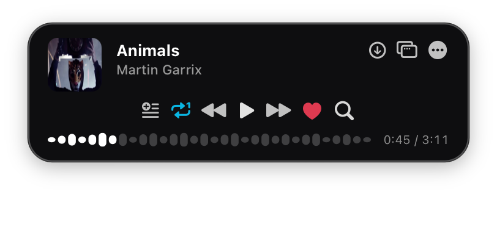

Lives in Your Menu Bar
Click the menu bar icon or press a global hotkey to pop open your music controls. Click away and Mooziac gracefully tucks back into your Mac status bar.
A fast, distraction-free YouTube Music & local audio player tucked right into your Mac’s menu bar. Built with pure Swift and SwiftUI.

Mooziac eliminates bloated browser tabs and heavy desktop apps with a lightweight, native Swift architecture.
Click the menu bar icon or press a global hotkey to pop open your music controls. Click away and Mooziac gracefully tucks back into your Mac status bar.
Stream your YouTube Music Liked Songs and playlists, or drop in high-res local audio files including FLAC, MP3, WAV, and M4A.
Slide your finger along the far-right edge of your MacBook trackpad to adjust volume with realistic tactile haptics. Corner taps let you skip or pause.
Experience real-time lyric scrolling synchronized line-by-line with your playback for a distraction-free sing-along experience.
Share what you’re listening to with friends on Discord. Displays album artwork, song title, artist, and live playback timestamps automatically.
Zero third-party analytics, zero user tracking, and zero ads. Your playlists, history, and favorites are stored securely in a local SQLite database on your Mac.
Control your music without ever opening a window or interrupting your workflow.
Mooziac is packaged as a Universal 2 binary, fully optimized for both Apple Silicon and Intel hardware.
Runs natively on M1, M2, M3, M4 Macs with minimal CPU overhead, preserving your MacBook battery life during long listening sessions.
Fully tested and optimized on macOS 13 Ventura, macOS 14 Sonoma, and macOS 15 Sequoia, adopting modern macOS design standards.
No bloated web wrapper frameworks or Chromium instances eating gigabytes of RAM. Pure Swift, AppKit, and WebKit integration.
Choose between the precompiled DMG installer or build directly from source using Swift Package Manager.
Download the latest universal release, drag the app into your Applications folder, and launch.
Download Mooziac.dmgClone the official repository and compile with Xcode Command Line Tools.
git clone https://github.com/shirkeharsh/mooziac.git
cd mooziac
./build_app.sh
Everything you need to know about Mooziac for macOS.